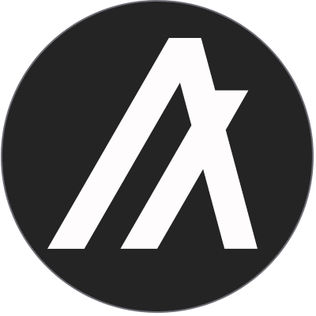
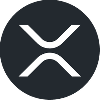

QNT

What is Quant(QNT)?
Quant
(QNT) is a blockchain interoperability network and operating system
that was first announced in 2018.
The project was funded through an
ICO, in which $11 million
was raised (out of a $36.9 million hard cap).
Why QNT?
- Interoperability using Overledger DLT gateway
- ISO 20022 Compliance
- Partnered with several big financial institutions
- Digital Pound Foundation
SGB
What is Songbird Network(SGB)?
Songbird (SGB) operates as the premier Canary Network for the Flare ecosystem. The project provides a testing ground for future Flare Dapps and smart contracts. The goal of the project is to provide a live environment to ensure that only market-ready projects make it to the Flare network. This approach helps to reduce risk and drive blockchain adoption.
Why SGB?
- Launch of Flare Networks (July 4)
- F-assets
- Very easy Defi Yield Farming
- Cheap and fast transactions
HBAR
What is Hedera Hashgraph(HBAR)?
Hedera is the most used, sustainable, enterprise-grade public network
for the decentralized economy that allows individuals and businesses
to create powerful decentralized applications (DApps).
It is designed to be a fairer, more efficient system that eliminates
some of the limitations that older blockchain-based platforms face —
such as slow performance and instability.
It was funded through an initial coin offering (ICO) in August 2018
and first launched open access to its mainnet just over a year later
in September 2019. As part of the ICO, investors were able to purchase
the platform’s native utility token (HBAR) at the lowest possible
pricing.
Why HBAR?
- It's unique, uses Hashgraph instead of Blockchain
- Owns Patents to it's protocol
- Cheap and fast transactions
-
Hedera's Governing Council: Hedera is owned and governed by the
world's leading organizations
For more info click this
ALGO 
What is Algorand(ALGO)?
Algorand is a self-sustaining, decentralized, blockchain-based network
that supports a wide range of applications. These systems are secure,
scalable and efficient, all critical properties for effective
applications in the real world. Algorand will support computations
that require reliable performance guarantees to create new forms of
trust.
The Algorand mainnet became live in June 2019, and was able to handle
almost 1 million transactions per day as of December 2020. Algorand
transaction metrics can be viewed here. Algorand initial coin offering
(ICO) was held in June 2019, with the Algorand price of $2.4 per
token.
Why ALGO?
- Cheap, fast, and efficient transactions
- It is based on a permissionless pure proof-of-stake (PoS) blockchain protocol.
- Auto Yield Farm. You dont need to do anything to earn more ALGO at 4% APY.
- ISO 20022 Compliant
- It's founded by MIT's very own Silvio Micali, a profesor of computer science at the Massachusetts Institute of Technology.
XRP 
What is XRPL(XRP)?
XRP is a real-time, cryptocurrency gross-settlement system, currency
exchange and remittance network created by Ripple Labs Inc, a US-based
technology company. The company then created the XRP cryptocurrency,
which it describes as a “digital asset built for global payments”.
Why XRP?
-
Cheap, fast, and efficient low-cost transactions
($0.0002 to transact) - Speed (settling transactions in 3-5 seconds)
- Scalability (1,500 transactions per second)
- Carbon-neutral and energy-efficient.
- ISO 20022 Compliant